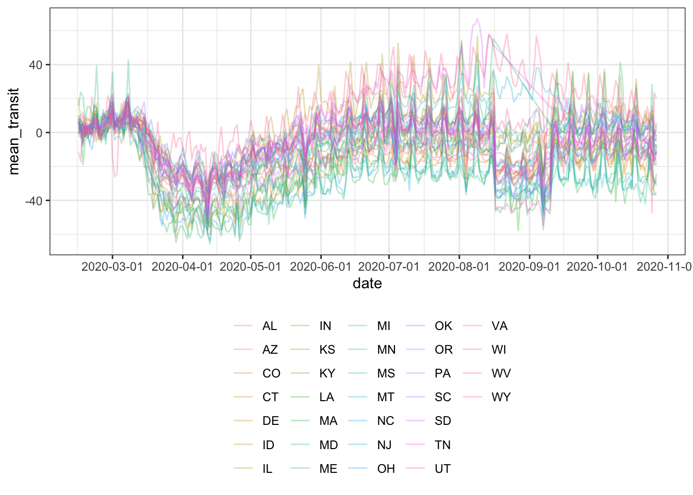
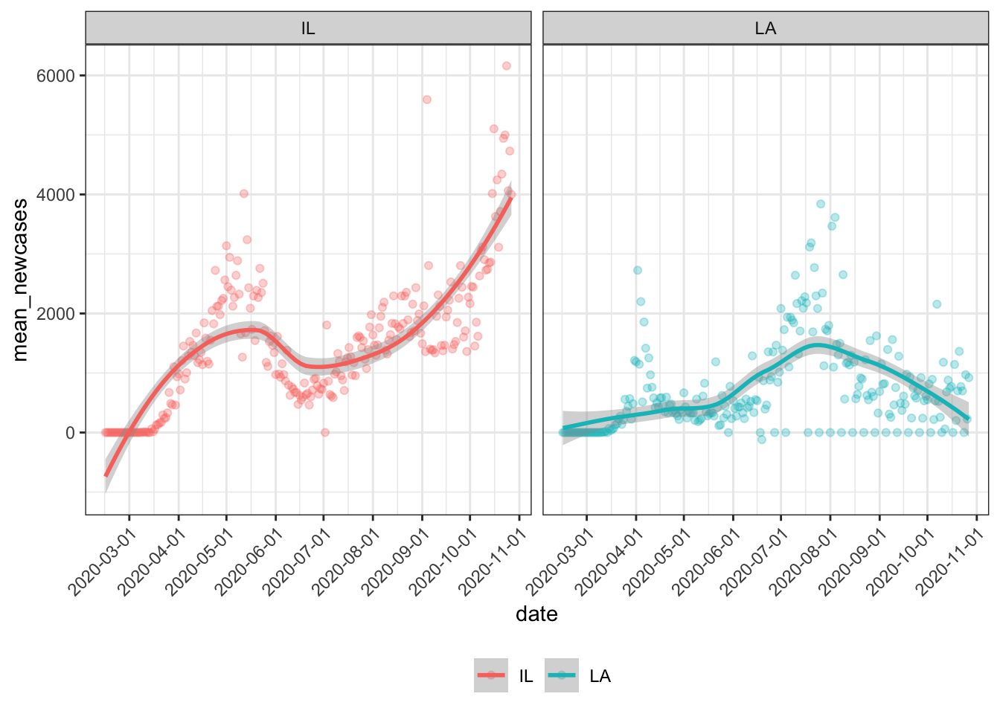
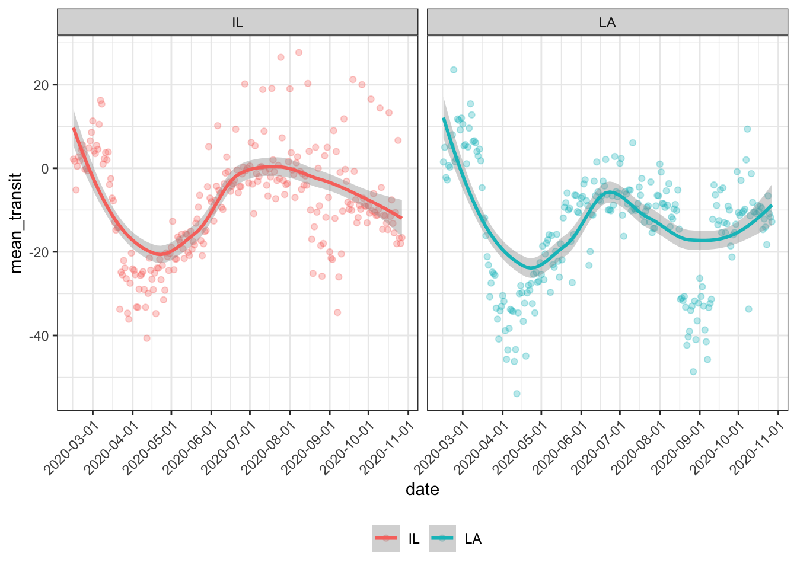
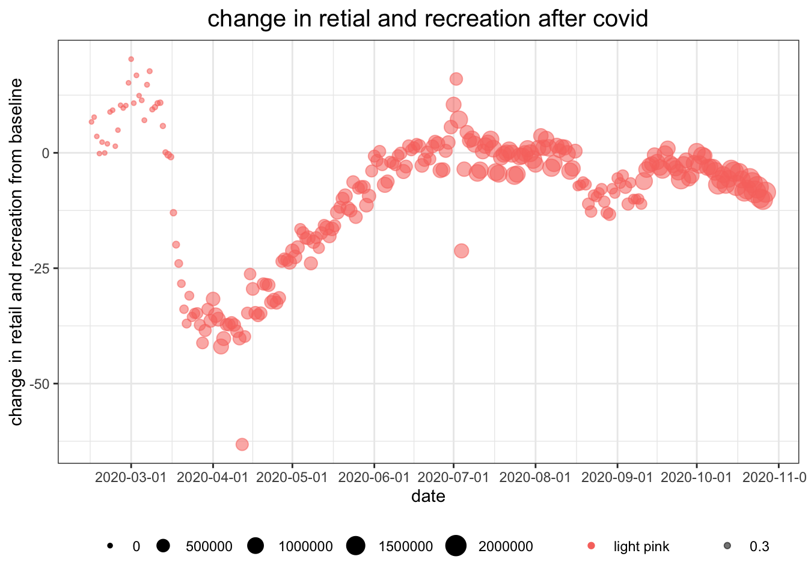
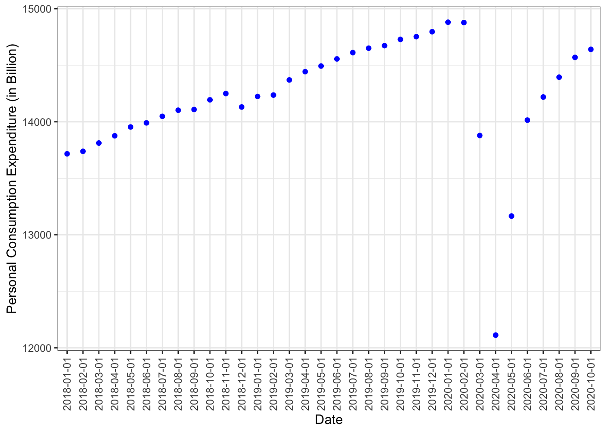
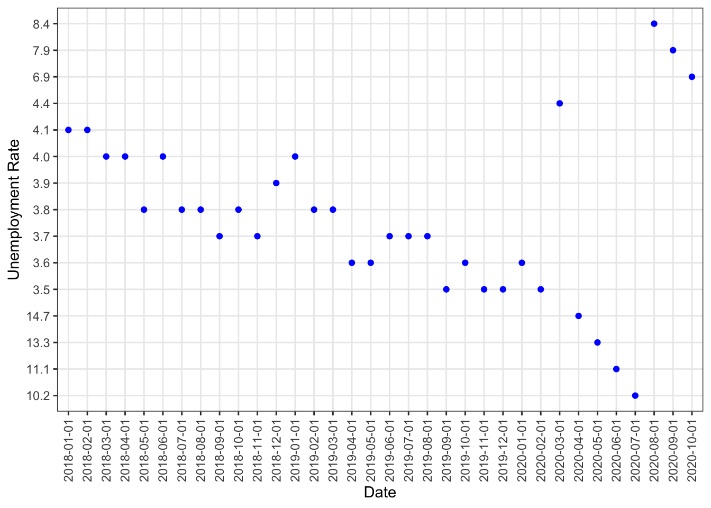

daily_cases = read_csv("./data/case_daily_trends__united_states.csv") %>%
janitor::clean_names() %>%
mutate(
date = mdy(case_daily_trends_united_states),
new_cases = as.double(x2),
seven_day_ma = as.double(x3)) %>%
select(date, new_cases, seven_day_ma) %>%
slice(-1:-3) %>%
map_df(rev) To seek how COVID-19 has influenced our transportation over the past few months, we would like first to understand its progress, and we did it by graphing the daily new cases and deaths over time.
line.fmt = list(dash="solid", width = 1.5, color= "viridius")
daily_cases %>%
plot_ly(x = ~date, y = ~new_cases, type = "bar", name = "Daily New Cases") %>%
add_lines( x=~date, y = ~seven_day_ma, line=line.fmt, name = "7-Day Moving Average") %>%
layout(xaxis = list(title = "Date"), yaxis = list(title = "Daily New Cases"))The plot shows the number of daily new cases of COVID-19 from Jan.22nd to Nov.7th, 2020. We can observe an overall continuously increasing trend starts in the middle of March. Eventually, the number of daily confirmed cases reached 132830 on Nov.6th.
daily_deaths = read_csv("./data/death_daily_trends__united_states.csv") %>%
janitor::clean_names() %>%
mutate(
date = mdy(death_daily_trends_united_states),
new_deaths = as.double(x2),
seven_day_ma = as.double(x3)) %>%
select(date, new_deaths, seven_day_ma) %>%
slice(-1:-3) %>%
map_df(rev)
line.fmt = list(dash="solid", width = 1.5, color= "viridius")
daily_deaths %>%
plot_ly(x = ~date, y = ~new_deaths, type = "bar", name = "Daily New Deaths") %>%
add_lines( x=~date, y = ~seven_day_ma, line=line.fmt, name = "7-Day Moving Average") %>%
layout(xaxis = list(title = "Date"), yaxis = list(title = "Daily New Deaths"))The plot shows the number of daily new deaths of COVID-19 from Jan.22nd to Nov.7th, 2020. As seen in this plot, the number of daily new deaths started soaring by the end of March and reaches a peak at 6489 deaths per day on Apr.15th. The number is then observed to decrease until it reaches a plateau at around 1000 deaths per day.
After determining that the outbreak of COVID-19 took place in mid-March and still has not been under full control, we can start analyzing data within this time frame.
Firstly, we mapped two bubble maps to see how air transportation is affected by comparing the flight numbers’ changes since the middle of March and the number of total COVID-19 cases by states.
#import data for covid_impact_on_airport_traffic
#Main Problem: join data, have date and state match for both data
# Transportation and Covid have different way to representing date(2020-01-01 in transportation date and 01/01/2020 in Covid data)
transportation =
read_csv("./data/covid_impact_on_airport_traffic.csv" ) %>%
janitor::clean_names() %>%
filter(country != "Australia" & country != "Chile" & country != "Canada") %>% #only leave United States data
separate(date, c("year","month","day"), sep = "([-])") %>% # I re-arrange the date information so that it matched the date format in Covid data
mutate(date = paste(month,day,year,sep = "/")) %>% # I re-arrange the date information so that it matched the date format in Covid data
relocate(date) %>%
select(-year,-month,-day,-version,-aggregation_method,-state,-country) %>% #delete variable that is not in our interest
rename(state = iso_3166_2) %>% #rename state variable so that we can combine two data
mutate(state=gsub("US-","",state)) # reformat state variable, delete prefix of US-
Covid =
read_csv("./data/United_States_COVID-19_Cases_and_Deaths_by_State_over_Time.csv" ) %>%
janitor::clean_names() %>%
filter(consent_cases == "Agree" | consent_deaths == "Agree")%>% #need to decided whether this step is necessary
select("submission_date":"pnew_death") %>% #select variable of interest, need to look further into which variable we are interested in and way
rename(date = submission_date) # rename date variable so that we can match data accordingly
Covid_transport_data =
left_join(transportation, Covid, by = c("date")) %>% #left join two data, by date
filter(state.y == state.x)
#filter the data so that we only leave the data that have matching date and statetransport_state =
Covid_transport_data %>%
mutate(centroid=gsub("POINT\\D","",centroid)) %>%
separate(centroid, into = c("long", "lat"), sep = 17) %>%
mutate(across(where(is.character), str_trim)) %>%
group_by (airport_name, long, lat, state.x) %>%
summarize(
mean_percent_base = mean(percent_of_baseline)
) %>%
mutate(long = round(as.double(long),digits = 0),
lat = round(as.double(str_remove(lat,"\\)"))),digits = 2,
mean_percent_base = round(mean_percent_base, digits = 2))
mybins <- seq(40, 90, by=10)
mypalette <- colorBin( palette="magma", domain=transport_state$mean_percent_base, bins=mybins)
mytext = paste(
"Longitude: ", transport_state$long,
"Latitude: ", transport_state$lat,
"Percent of baseline: ", transport_state$mean_percent_base) %>%
lapply(htmltools::HTML)
m <- leaflet(transport_state) %>%
addTiles() %>%
addProviderTiles("CartoDB.Positron") %>%
addCircleMarkers(~long, ~lat,
fillColor = ~mypalette(mean_percent_base),
fillOpacity = 0.7,
color="white",
radius = ~ mean_percent_base/2,
stroke = FALSE,
label = mytext,
labelOptions = labelOptions( style = list("font-weight" = "normal", padding = "3px 8px"), textsize = "13px", direction = "auto")
) %>%
addLegend( pal= mypalette, values=~mean_percent_base, opacity=1, title = "Percent of baseline", position = "bottomright" )
mThe air transportation bubble map shows a comparison of the different proportions of the average number of trips from Mar.16th to Oct.16th, 2020, to the average baseline number of trips during the same period among the seven major airports in the US States:
• Boston Logan International
• Charlotte Douglas International
• Chicago O’Hare International
• Denver International
• Detroit Metropolitan Wayne County
• Newark Liberty International
•Washington Dulles International
The larger the bubble is, the greater the percent of baseline and the smaller difference from the baseline will be. For Instances, we can see that the proportion corresponding to Newark Liberty International Airport (NJ) is the greatest, while the proportion corresponding to Washington Dulles International (VA) is the smallest. This difference implies that COVID-19 has brought a much more severe impact to air transportation in New Jersey than in Virginia.
case_state =
Covid_transport_data %>%
mutate(centroid=gsub("POINT\\D","",centroid)) %>%
separate(centroid, into = c("long", "lat"), sep = 17) %>%
mutate(across(where(is.character), str_trim)) %>%
group_by (airport_name, long, lat, state.x) %>%
summarize(
total_cases = max(tot_cases)
) %>%
mutate(long = round(as.double(long),digits = 0),
lat = round(as.double(str_remove(lat,"\\)"))),digits = 2
)
mybins <- seq(80000, 380000, by=50000)
mypalette <- colorBin( palette="magma", domain=case_state$total_cases, bins=mybins)
mytext = paste(
"Longitude: ", case_state$long,
"Latitude: ", case_state$lat,
"Total Cases: ", case_state$total_cases) %>%
lapply(htmltools::HTML)
n <- leaflet(case_state) %>%
addTiles() %>%
addProviderTiles("CartoDB.Positron") %>%
addCircleMarkers(~long, ~lat,
fillColor = ~mypalette(total_cases),
fillOpacity = 0.7,
color="white",
radius = ~ sqrt(total_cases/8000)*7,
stroke = FALSE,
label = mytext,
labelOptions = labelOptions( style = list("font-weight" = "normal", padding = "3px 8px"), textsize = "13px", direction = "auto")
) %>%
addLegend( pal= mypalette, values=~total_cases, opacity=1, title = "Total cases", position = "bottomright" )
nThe COVID bubble map provides information on the number of total COVID-19 cases from Mar.16th to Oct.16th by states. The larger the bubble size is, the larger number of the total COVID-19 cases is. As seen in this plot, Illinois, North Carolina, and New Jersey have a relatively greater number of total cases, while Colorado has the smallest number of total cases.
By comparing the two bubble maps, we can see an association between the flights and the number of total COVID-19 cases from Mar.16th to Oct.16th. For the states, such as New Jersey, the percent of baseline for the flights is relatively smaller with more total cases, suggesting that as the number of total cases increases, the impact of COVID-19 brought to the air transportation will also be increased.
Furthermore, we tried to understand how ground transportations (subway, bus, and train) were affected by examining the changes of visits and length of stay at public transport hubs from the baseline (the median value, for the corresponding day of the week, during the 5-week period from Jan 3 to Feb 6, 2020).
#TRY to make plot about the relationship between mean_transit station percent change and date
Covid_mobility_data %>%
group_by(date,state) %>%
filter(!is.na(transit_stations_percent_change_from_baseline)) %>%
summarise(mean_transit = mean(transit_stations_percent_change_from_baseline),
mean_newcases = mean(new_case),
n = n()) %>%
ggplot(aes(x = date,y = mean_transit,color = state)) +
geom_line(alpha=0.3) +
scale_x_date(date_breaks = "1 month")
The graph depicts the average mobility changes in public transport hubs over time. We can see a noticeable drop in mobility from the plot since March for all states and did not completely rebound until the middle of June, which matches the trend of the COVID-19 progress.
#Covid_mobility_data %>%
# group_by(date,state) %>%
# filter(!is.na(transit_stations_percent_change_from_baseline)) %>%
# summarise(mean_transit = mean(transit_stations_percent_change_from_baseline),
# sum_newcases = sum(new_case),
# n = n()) %>%
# ggplot(aes(x = date,y = sum_newcases,color = state)) +
# geom_point(alpha=0.3) +
# scale_x_date(date_breaks = "1 month")#Covid_mobility_data %>%
# group_by(date,state) %>%
# filter(!is.na(transit_stations_percent_change_from_baseline) & new_case >0) #%>%
# summarise(mean_transit = mean(transit_stations_percent_change_from_baseline),
# sum_newcases = sum(new_case),
# n = n()) %>%
# ggplot(aes(x = sum_newcases,y = mean_transit,color = state)) +
# geom_point(alpha=0.3)#Covid_mobility_data %>%
# group_by(date,state) %>%
# filter(!is.na(transit_stations_percent_change_from_baseline) & new_case >0) #%>%
# summarise(mean_transit = mean(transit_stations_percent_change_from_baseline),
# sum_tot_cases = sum(tot_cases),
# n = n()) %>%
# ggplot(aes(x = mean_transit,y = sum_tot_cases,color = state)) +
# geom_point(alpha=0.3)Similar to air transportation, we graphed to see the different magnitude of changes by states.
#use plotly to compare the mean transit among each state
Covid_mobility_data %>%
group_by(state) %>%
filter(!is.na(transit_stations_percent_change_from_baseline) & new_case >0) %>%
summarise(mean_transit = mean(transit_stations_percent_change_from_baseline),
n = n()) %>%
mutate(state = fct_reorder(state, mean_transit)) %>%
plot_ly(x = ~state, y = ~mean_transit, color = ~state, type = "bar", colors = "viridis")This bar plot shows each state’s average mobility change from Feb.15 to Oct.27. The percent changes from baseline for each state are shown along the bars. We can see that most northeastern states, like Massachusetts (MA), New Jersey (NJ) and Maryland (MD) have considerable negative changes, indicating the use of ground transport in these states has decreased dramatically. While some northwestern states, such as Wyoming (WY), South Dakota (SD), and Idaho (ID), seem to have positive changes, referring to an increase in the use of ground transport.
#use plotly to compare the mean transit among each state
Covid_mobility_data %>%
group_by(state) %>%
filter(!is.na(transit_stations_percent_change_from_baseline) & new_case >0) %>%
summarise(mean_transit = mean(transit_stations_percent_change_from_baseline),
sum_new_cases = sum(new_case),
n = n()) %>%
mutate(state = fct_reorder(state, sum_new_cases)) %>%
plot_ly(x = ~state, y = ~sum_new_cases, color = ~state, type = "bar", colors = "viridis")This bar plot shows the number of total COVID-19 cases from Feb.15 to Oct.27 for each state. The graph shows that Illinois (IL), Ohio (OH), and North Caroline (NC) have the greatest number of total cases. Maine (ME), Delaware (DE), and Wyoming (WY) have the least number of total cases.
By comparing the two graphs, we hypothesized that the total number of cases is a factor in estimating ground transit mobility changes as we can see a significant drop in the use of ground transportation for states with a relatively large number of total cases, such as NJ and Louisiana (LA) and a non-decrease change for states with fewer COVID-19 cases, such as WY and ID. However, we also noticed that though the situation of COVID-19 in some states seems to be more severe than it was in other states, the usage of ground transportation in these states has been decreased less than expected. For example, IL is the state with the greatest number of total cases, but it only has moderate average mobility change among all states.
Does this mean that the association between COVID-19 and ground transportation cannot be extrapolated from one state to another? To answer this question, we took a closer look at the situation in IL and LA.
#use plotly to compare the mean transit among each state
#Covid_mobility_data %>%
# group_by(state) %>%
# filter(!is.na(transit_stations_percent_change_from_baseline) & new_case >0) #%>%
# summarise(mean_transit = mean(transit_stations_percent_change_from_baseline),
# mean_new_cases = mean(new_case),
# n = n()) %>%
# mutate(state = fct_reorder(state, mean_new_cases)) %>%
# plot_ly(x = ~state, y = ~mean_new_cases, color = ~state, type = "bar", colors #= "viridis")plot_ILCA_MEAN_NEWCASE =
Covid_mobility_data %>%
group_by(date,state) %>%
filter(!is.na(transit_stations_percent_change_from_baseline)& state == c("LA","IL")) %>%
summarise(mean_transit = mean(transit_stations_percent_change_from_baseline),
mean_newcases = mean(new_case),
n = n()) %>%
ggplot(aes(x = date,y = mean_newcases,color = state)) +
geom_point(alpha=0.3) +
geom_smooth()+
theme(axis.text.x = element_text(angle = 45, hjust = 1))+
scale_x_date(date_breaks = "1 month") +
facet_wrap(~state)
plot_ILCA_MEAN_NEWCASE
This panel presents the average mobility change in IL and LA from Feb.15 to Oct.27. Two plots seem to have generally similar trends with an apparent decrease begins from mid-February till mid-April. The trends then start to bounce back, and once it reaches closely to the baseline level it starts to decrease again. The one difference between these two trends is that the second drop in LA is much steeper than in IL.
plot_ILCA_MEAN_Transit=
Covid_mobility_data %>%
group_by(date,state) %>%
filter(!is.na(transit_stations_percent_change_from_baseline)& state == c("LA","IL")) %>%
summarise(mean_transit = mean(transit_stations_percent_change_from_baseline),
mean_newcases = mean(new_case),
n = n()) %>%
ggplot(aes(x = date,y = mean_transit,color = state)) +
geom_point(alpha=0.3) +
geom_smooth()+
theme(axis.text.x = element_text(angle = 45, hjust = 1)) +
scale_x_date(date_breaks = "1 month") +
facet_wrap(~state)
plot_ILCA_MEAN_Transit
This panel shows the daily confirmed case trends in IL and LA from Feb.15 to Oct.27. We see that an overall continuously increasing trend in IL. The trend tends to drop from the middle of May but back to a more rapid increase since July. On the other hand, the increase in LA is relatively gentle, and its growth stopped as it reached its peak in late July.
These plots demonstrate that the trends in daily confirmed cases and mobility changes are quite alike in LA and IL before July, showing evidence that a similar association between COVID-19 and ground transportation exist in IL as well. The primary reason that the decrease in IL’s ground transportation usage is smaller than expected might be that once the daily confirmed cases started decreasing, people started taking public transportation and failed to notice the “second wave” of increased cases.
#plot_ILCA_MEAN_Transit/plot_ILCA_MEAN_NEWCASE#Covid_mobility_data %>%
# group_by(date,state) %>%
# filter(!is.na(transit_stations_percent_change_from_baseline)& state == #c("LA","IL")) %>%
# summarise(mean_transit = mean(transit_stations_percent_change_from_baseline),
# sum_totalcases = sum(tot_cases),
# n = n()) %>%
# ggplot(aes(x = date,y = sum_totalcases,color = state)) +
# geom_point(alpha=0.3) +
# geom_smooth()+
# scale_x_date(date_breaks = "1 month") +
# facet_wrap(~state)##comparing only by date
#Covid_mobility_data %>%
# group_by(date) %>%
# filter(!is.na(transit_stations_percent_change_from_baseline)) %>%
# summarise(mean_transit = mean(transit_stations_percent_change_from_baseline),
# sum_newcases = sum(new_case),
# n = n()) %>%
# ggplot(aes(x = date,y = sum_newcases,color="light pink")) +
# geom_point(aes(size=mean_transit,alpha=0.3))+
# scale_x_date(date_breaks = "1 month")+
# labs(titles = "number of newcases daily",
# y = "New Cases" )
# ##comparing only by date
##TRANSIT
#Covid_mobility_data %>%
# group_by(date) %>%
# filter(!is.na(transit_stations_percent_change_from_baseline)) %>%
# summarise(mean_transit = mean(transit_stations_percent_change_from_baseline),
# sum_newcases = sum(new_case),
# n = n()) %>%
# ggplot(aes(x = date,y = mean_transit,color="light pink")) +
# geom_point(aes(size=sum_newcases,alpha=0.3))+
# scale_x_date(date_breaks = "1 month")+
# labs(titles = "change in transit after covid",
# y = "change in transit from baseline" )Economics
Covid_mobility_data %>%
group_by(date) %>%
filter(!is.na(retail_and_recreation_percent_change_from_baseline)) %>%
summarise(mean_retail_recreation = mean(retail_and_recreation_percent_change_from_baseline),
sum_newcases = sum(new_case),
n = n()) %>%
ggplot(aes(x = date,y = mean_retail_recreation,color="light pink")) +
geom_point(aes(size=sum_newcases,alpha=0.3))+
scale_x_date(date_breaks = "1 month")+
labs(titles = "change in retial and recreation after covid",
y = "change in retail and recreation from baseline" )
personal_consumption_df =
read_csv("./data/personal_consumption.csv") %>%
janitor::clean_names() %>%
mutate(date = fred_graph_observations,
personal_consumption = x2) %>%
select(date, personal_consumption) %>%
slice(719:752) %>%
mutate(personal_consumption = as.double(personal_consumption),
personal_consumption = round(personal_consumption, digits = 1))
personal_consumption_df %>%
ggplot(aes(x = date, y = personal_consumption))+
geom_point(color = 'blue')+
theme(axis.text.x = element_text(angle = 90, vjust = 0.5, hjust=1)) +
labs(x = "Date", y = "Personal Consumption Expenditure (in Billion)")
unemployment_df =
read_csv("./data/unemployment_rate.csv") %>%
janitor::clean_names() %>%
mutate(date = fred_graph_observations,
unemployment_rate = x2) %>%
select(date, unemployment_rate) %>%
slice(851:884)
unemployment_df %>%
ggplot(aes(x = date, y = unemployment_rate))+
geom_point(color = 'blue')+
theme(axis.text.x = element_text(angle = 90, vjust = 0.5, hjust=1)) +
labs(x = "Date", y = "Unemployment Rate")
#Covid_mobility_data %>%
# group_by(date) %>%
# filter(!is.na(residential_percent_change_from_baseline)) %>%
# summarise(mean_residential = mean(residential_percent_change_from_baseline),
# sum_newcases = sum(new_case),
# n = n()) %>%
# ggplot(aes(x = date,y = mean_residential,color="light pink")) +
# geom_point(aes(size=sum_newcases,alpha=0.3))+
# scale_x_date(date_breaks = "1 month")+
# labs(titles = "change in retial and recreation after covid",
# y = "change in retail and recreation from baseline" )
# ##comparing only by state
#Covid_mobility_data %>%
# group_by(state) %>%
# filter(!is.na(transit_stations_percent_change_from_baseline)) %>%
# summarise(mean_transit = mean(transit_stations_percent_change_from_baseline),
# mean_newcases = mean(new_case),
# n = n()) #mean_Covid_mobility_data =
# Covid_mobility_data %>%
# group_by(state) %>%
# filter(!is.na(transit_stations_percent_change_from_baseline)) %>%
# summarise(mean_transit = mean(transit_stations_percent_change_from_baseline),
# mean_newcases = mean(new_case),
# n = n())